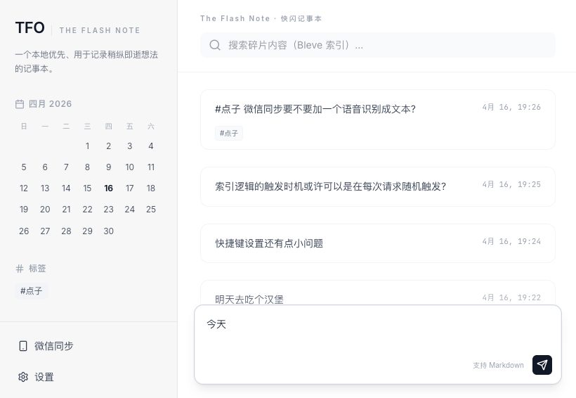

界面预览')" />Features
所有笔记存储在你自己的电脑上，隐私完全可控。无数据库，无云端依赖。
全局快捷键呼出窗口，粘贴即保存，捕捉稍纵即逝的想法。默认 Alt+Shift+F。
给微信 Bot 发消息，自动转为笔记。消息仅经过微信服务器，不上传第三方。
笔记即文件，迁移/同步只需复制文件夹。搜索索引可随时从源文件重建。
基于 Bleve 的高性能本地全文检索，毫秒级响应。
支持 macOS / Windows / Linux，提供桌面应用与 CLI 两种形态。
Getting Started
从 Releases 下载对应平台的二进制，解压即用：
| 平台 | 方式 |
|---|---|
| macOS | 打开 TFOApp.app，应用常驻菜单栏 |
| Windows | 运行 tfo-desktop.exe，应用常驻系统托盘 |
| Linux / CLI | 运行 tfo，浏览器打开 http://localhost:8080 |
双击桌面应用或终端运行 CLI。
按 Alt+Shift+F（可自定义）呼出快捷输入窗口，输入内容后回车保存。
在 Web 界面查看、搜索、编辑所有笔记。
在设置中配置微信 Bot，之后发给 Bot 的消息自动保存为笔记。
复制数据文件夹到新设备即可，搜索索引会自动重建。
前置条件：Go 1.25+、Node.js 18+
# 开发模式
cd frontend && npm install && npm run dev # 终端 1：前端
go run ./cmd/tfo # 终端 2：后端
# 生产构建
./scripts/build.sh cli # CLI（全平台）
./scripts/build.sh desktop --os darwin # macOS 桌面
./scripts/build.sh desktop --os windows # Windows 桌面
./scripts/build.sh all # 全量构建Configuration
配置文件位于数据目录下的
.config.json：
| 配置项 | 说明 | 默认值 |
|---|---|---|
dataDir |
数据目录路径 | — |
hotkeyGlobalQuickCapture |
全局唤起快捷键（桌面端） | Alt+Shift+F |
hotkeyInputFocus |
聚焦输入框快捷键（网页端） | Alt+S |
wechat.enabled |
启用微信 Bot | false |
wechat.baseUrl |
微信 Bot 服务地址 | — |
indexRebuildOnStart |
启动时重建搜索索引 | false |
No Database
没有 SQLite，没有 LevelDB。每条笔记按日期存储为独立 Markdown 文件，打开文件夹就能看到所有数据。迁移只需复制文件夹，索引随时可重建。